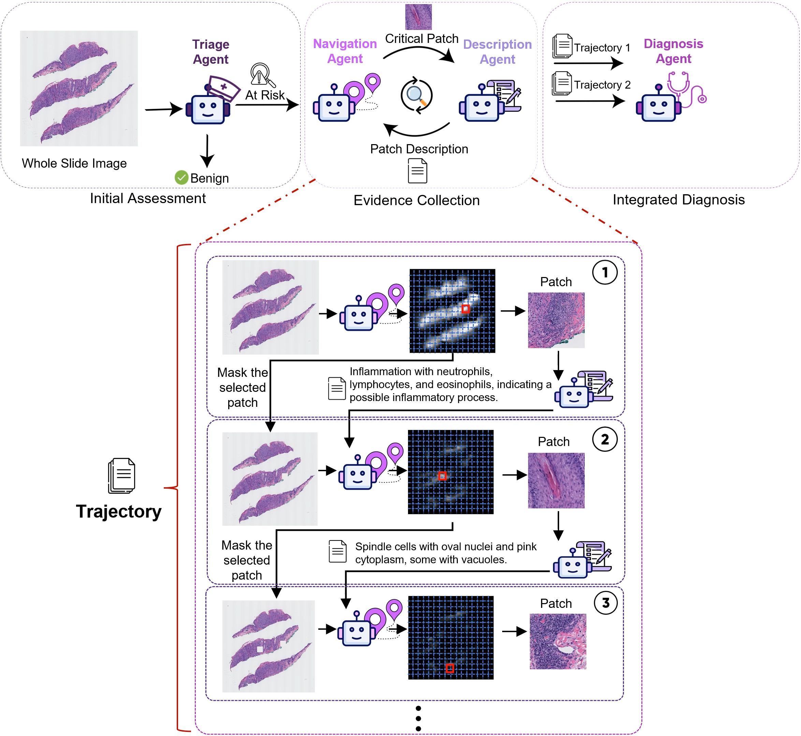
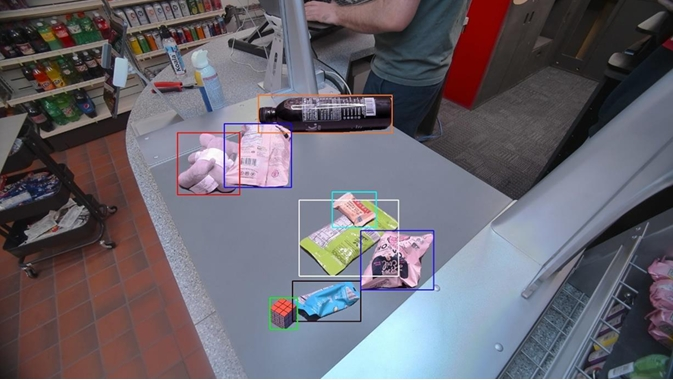

|
I am the founder of a stealth startup in Seattle, building AI solutions. I hold a Master’s in Electrical Engineering and Data Science from the University of Washington. My experience includes roles as a Machine Learning Engineer at Radius AI, and Research Assistant positions at UW’s Robotics Lab and GRAIL Lab. I have also worked at IIT Madras’s Computational Imaging Lab, NASA’s Jet Propulsion Laboratory (Juno mission), and the Indian Space Research Organisation. I hold a Bachelor’s in Electronics and Communication Engineering from the Coimbatore Institute of Technology. |

|
|
I'm interested in computer vision, machine learning, and image processing. Much of my research is about inferring the physical world (shape, motion, depth, color, light, etc) from images and videos. I also like to focus on interdisciplinary research, applying vision based methods to innovatively tackle problems in different fields. More recently, I have been working on multi-modal agents. |
|  |
Fatemeh Ghezloo, Mehmet Saygin Seyfioglu, Rustin Soraki, Wisdom O. Ikezogwo, Beibin Li, Tejoram Vivekanandan, Joann G. Elmore, Ranjay Krishna, Linda Shapiro [ICCV'25] PathFinder addresses challenges in analyzing gigapixel-scale histopathology whole slide images (WSIs) through a multi-agent framework that emulates expert pathologists' diagnostic process. Unlike traditional AI approaches, PathFinder employs four specialized agents—Triage, Navigation, Description, and Diagnosis—that collaborate to analyze WSIs, identify relevant regions, and generate comprehensive diagnoses with natural language explanations. In skin melanoma diagnosis, PathFinder outperforms state-of-the-art methods by 8%, surpasses average pathologist performance by 9%, and provides inherent explainability through high-quality descriptive outputs comparable to GPT-4o. |
|  |
Tejoram Vivekanandan, Daniel King, Andrea Fanelli [Project Report] This project addresses Automatic Checkout challenges in retail by developing a synthetic image pipeline to enhance object detection training. Overcoming data scarcity from product seasonality and diverse variations, it employs advanced methods like GANs, NeRFs, and PixelNeRFs to generate realistic scenes. Integrating these images into YOLOv5 training boosts detection accuracy to a peak mAP-50 of 0.882 with a 4:6 real-to-synthetic ratio, demonstrating synthetic data augmentation as a scalable solution for robust retail environments. |

|
Tejoram Vivekanandan, Glenn Orton, Thomas Momary [Project Report] To determine the correlation between the color change, the altitude and ultraviolet exposure of the storm’s particles, near-infrared images of Jupiter with Oval BA present were examined. After calibration and preprocessing the images during red, white and the transition phase were compiled for different wavelengths. The reflectivity of the vortex at each wavelength was adjusted subject to angles of emission and incident sunlight using the Minnaert function. Results confirmed a change in altitude of particles between the red and white epochs. |

|
Tejoram Vivekanandan, E.Venkateswarlu, Thara Nair, Vinod M Bothale [Project Report] Shadow restoration approach for high resolution satellite images was adopted. This approach detected the shadow area and segmented the image into regions relevant to the types of land surface. Thereafter, shadow restoration was applied region-wise in relation to the degree of correspondence between shadow and neighboring non-shadow regions. The results proved that the shadow regions processed had a better appearance and were highly compatible with surrounding non-shadow regions. Thus, the final accuracy was more than that of the conventional approaches. |

|
Tejoram Vivekanandan, Jenisha Priscilla.J, Swetha,B.Bhuvaneshwari, Dhanalakshmi.S [Project Report] A prototype of an intelligent self-driving vehicle was developed on a Raspberry Pi with a variety of machine learning algorithms. It was able to predict the direction and control the vehicle based on the predictions. The prototype was trained to recognize traffic signs and to navigate without collision. For this purpose, the images of a track collected from a Pi camera were used to train different models of neural networks and the performance of each model was tested. Haar cascade classifier based stop sign detection signals were used to stop the vehicle. 95% decision accuracy was attained using softmax activation function with 256 hidden layer nodes. |

|
Tejoram Vivekanandan [Github Link] In this project, handwritten numerics from a live video input was recognized and matched with telephone directory to find the name associated with the detected telephone number. Image background was removed through edge detection, localization and perspective transform. After Thresholding, ROI bounding boxes were computed. Finally digits were recognized by deep neural network through classification. |
|
|
Sep '22 |
I am excited to join the University of Washington for my grad school. | |||
Sep '21 |
I am joining the Computational Imaging Lab of Indian Institute of Technology, Madras. I'll be working with Dr. Kaushik Mitra. | |||
Jan '21 |
Shadow Detection and Restoration in VHR Satellite Imagery got accepted for peer review in Journal of the Indian Society of Remote Sensing. | |||
Aug '20 |
Super excited to be selected for the JPL Visiting Student Research Program. I'll be working with Dr. Glenn Orton at the Planetary and Exoplanetary Systems Department at NASA Jet Propulsion Laboratory from September. | |||
Nov '19 |
I'll be starting my internship with Ms. Thara Nair at Indian Space Research Organisation, Hyderabad. |

|

|

|

|

|